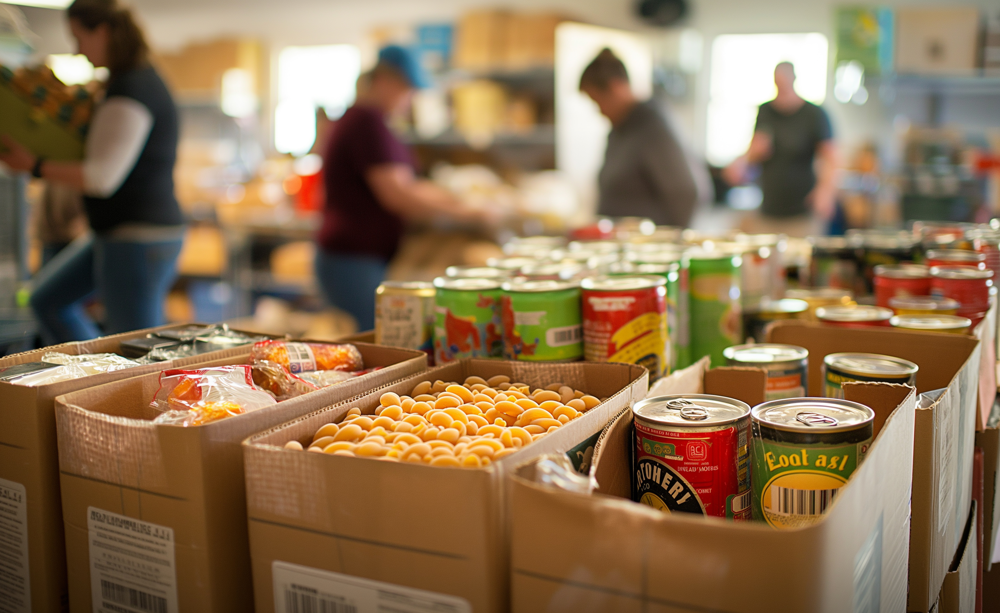

About Leeds Food Aid Network
Bringing together people and organisations to tackle food poverty in Leeds.
Who We Are
Leeds Food Aid Network (LFAN) was founded to tackle one of the city's most pressing issues: food poverty. We are a growing network of food banks, grassroots charities, faith-based groups, and volunteers working together to ensure that no one in Leeds has to go hungry. Our approach is both practical and relational — we don’t just give out food, we listen, we care, and we connect people to longer-term support.
Our Mission & Vision

Our Mission
To ensure that every person in Leeds has access to the food and dignity they deserve—especially in times of crisis. We believe in practical help, but also in creating a hunger-free future driven by compassion and coordination.
Our Vision
A city where no one has to choose between eating and heating—where food support is accessible, welcoming, and free from stigma.
Our Impact
In 2024 alone, LFAN’s partners distributed over 50,000 food parcels across Leeds. But we don’t measure impact just by numbers.
We support families in crisis, welcome isolated individuals, and empower communities to stand together. Every food parcel is a message of hope — and often, the first step toward long-term stability.
Why We Exist
Leeds is a vibrant city — but not everyone shares equally in its prosperity. The cost-of-living crisis, rising rents, low wages, and benefit delays mean thousands of people face food insecurity. LFAN exists because we believe access to food is a basic human right. We work to address both the symptoms and causes of food poverty.
How We Work

Collaboration
We connect food banks, referral agencies, and local organisations to ensure coordinated support.

Direct Help
We provide updated location maps and resources to help people find food support quickly and easily.

Volunteer Network
We rely on amazing volunteers who pack food parcels, offer support, and build relationships.
Our Supporters & Partners
LFAN is supported by a growing network of over 30 organisations, churches, schools, and businesses across Leeds.
Meet Our PartnersJoin Our Mission
We can’t do this alone. Whether you want to volunteer, donate, or partner with us — your support makes a difference.
Get InvolvedContact Us
- Email: info@leedsfoodaid.org.uk
- Phone: 0113 123 4567
- Address: Leeds Community Centre, Main Street, Leeds LS1